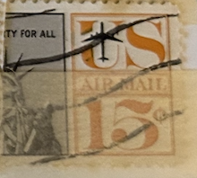
| SOURCE | TITLE| IMAGE MATCH | click to source page |
| Todocolección | estados unidos eeuu.-1983/2007 eeuu.- official - Buy Antique stamps of United States on todocoleccion | 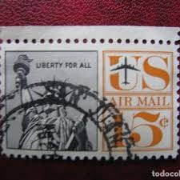 |
| eBay | C63, Mint NH 15¢ Misperfed Error * AIRMAIL STAMP * Stuart Katz | eBay | 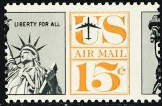 |
| Babu on Pinterest | 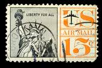 | |
| Bigstock | LIBERIA - CIRCA 2000s Image & Photo (Free Trial) | Bigstock | 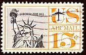 |
| Identifying c58, c61, or c63 stamp issues? | 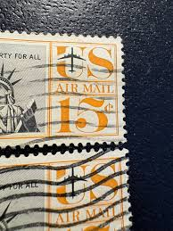 | |
| Dreamstime.com | A Stamp Printed in USA Shows Image of the Virgin Mary, Circa 1987 Editorial Stock Photo - Image of vintage, ukraine: 279376523 | 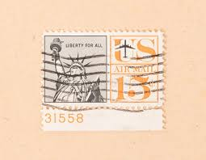 |
| Stamp collectors | 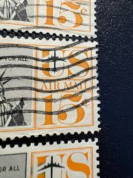 | |
| eBay | Sc#C63 15c Statue of Liberty airmail - right margin & Handstamped Cancel (A-1) | eBay | 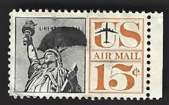 |
| HipStamp | C63 15 cents Statue of Liberty Stamp used VF | United States, Air Mail Stamp / HipStamp | 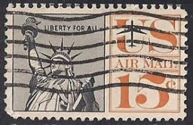 |
| Do these have any value? | 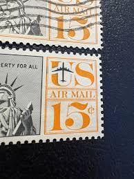 | |
| LIBERTY FOR ALL | Rare old Stamps | 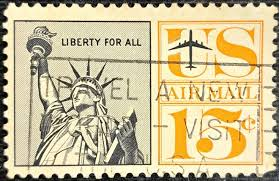 | |
| simple, type only | 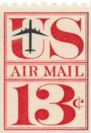 | |
| Muestra UNAISNY POSTACE s غل SONRPPAAVU שמותס З0ока پشکمامییی ONEPENNY NEW WALES SHOT ON REDMI 9 AI AI QUAD CAMERA 12ဲ ДИКаННАЦРРЕКСО POSTAL INALFPENNY) LAMAAAAAD OLDCOAST PostAat-e POSTAGE CONGRESS 100 LONDON 26 | 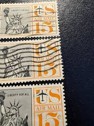 | |
| United States Air Mail | 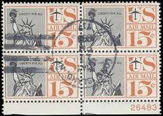 | |
| eBay | US #C58 | Mint NH | Fine | eBay | 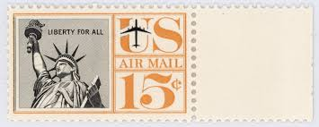 |
| eBay | STAMP US SCOTT C63 "Statue of Liberty" 15 CENT MNH 1961 PLATE BLOCK OF 4 #26483 | eBay | 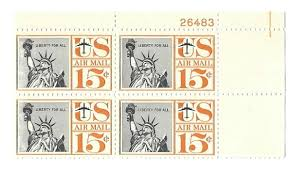 |
| eBay | EXCEPTIONAL GENUINE SCOTT #C58 MINT PRISTINE OG NH PSE CERT GRADED XF-SUPERB 95 | eBay | 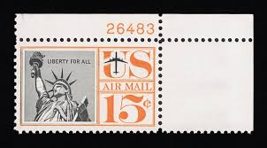 |
| HipStamp | United States C63 - Used - 15c Statue of Liberty (1961) (2) | United States, Air Mail Stamp / HipStamp | 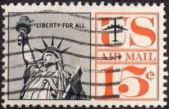 |
| Mystic Stamp Company | AC578 - 9/3/1969, 7/20/1969 Dual Cancel, US Airmail, #1371, C76, The American Moon - Mystic Stamp Company | 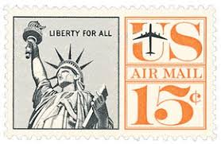 |
| eBay | C63, MNH 15¢ Huge Misperf Error Plate Block of Four * Stuart Katz | eBay | 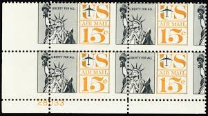 |
| Find Your Stamps Value | Value of Liberty For all US airmail 15 stamps | 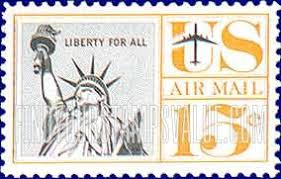 |
| eBay | US C58 15 Cent Statue of Liberty - Full Orange Border - Plate Block MNH OG | eBay | 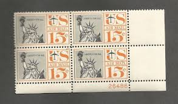 |
| Alamy | UNITED STATES OF AMERICA - CIRCA 1959: a stamp printed in the United States of America shows NATO Emblem, 10th anniversary of North Atlantic Treaty Or Stock Photo - Alamy | 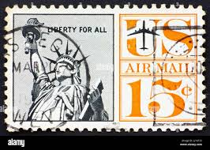 |
| vegas-stamps-hobbies.com | 1961 Statue Of Liberty Airmail Plate Block of 4 15c Postage Stamps - M – Vegas Stamps & Hobbies | 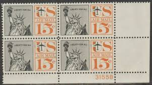 |
| Conco Services | Conco FALL_6 Newsletter 08:Gasser Newsletter_SPRING 06 | 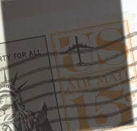 |
| eBay | US 15 cent Statue of Liberty Air Mail 1959, Scott C58, block of 4, MNH/OG/VF. | eBay | 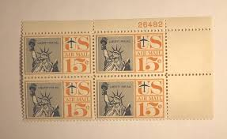 |
| seemystamps.com | See My Stamps! - A Place to Show Off Your Stamp Collection | Page 52 | 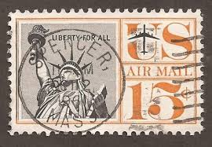 |
| 96 Postage Stamps ideas | postage stamps, postage, stamp collecting | 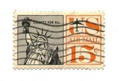 | |
| eBay | STAMP US SCOTT C63 "Statue of Liberty" 15 CENT USED 1961 FANCY CANCEL | eBay | 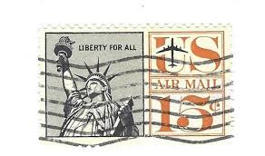 |
| eBay | C63, Mint NH 15¢ Two Way Misperf Error Block of Four - Stuart Katz | eBay | 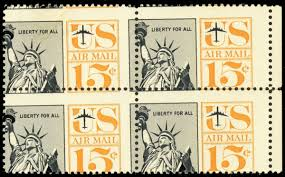 |
| eBay | Aviation 15 Cent Denomination US Back of Book Air Mail Stamps for sale | eBay | 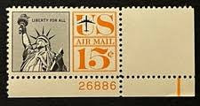 |
| Etsy | 20 Vintage Unused Statue of Liberty Mail Stamps / New York City NYC USPS Postage / 15 Cents US - Etsy | 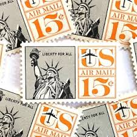 |
| eBay | US, Sc# C58, MNH, 1959, PLATE BLOCK of 4, Statue of Liberty, Torch, Jet Plane | eBay | 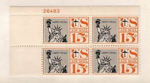 |
| eBay | US 15 Cent Statue Of Liberty Air Mail 1959, Scott #C58, Block Of 4, MNH/OG/XF. | eBay | 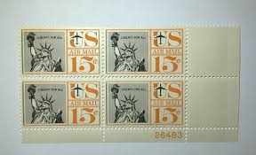 |
| eBay | STAMP US SCOTT C58 "Statue of Liberty" 15 CENT USED 1959 DATE CANCEL | eBay | 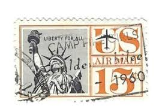 |
| eBay | STAMP US SCOTT C58 "Statue of Liberty" 15 CENT MNH 1959 WITH PB# | eBay | 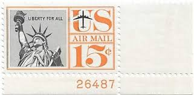 |
| Dreamstime.com | 212 Statue Liberty Vintage Stamp Stock Photos - Free & Royalty-Free Stock Photos from Dreamstime | 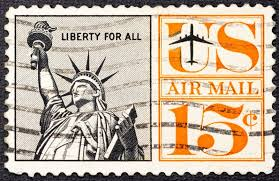 |
| eBay | Scott C58 US Air Mail Stamp 1959-61 15c Statue of Liberty Used (a3) | eBay | 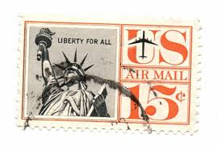 |
| PRINT Magazine | Weekend Heller: Pro Bono, Designed Stamps, Design Books, Designer Film – PRINT Magazine | 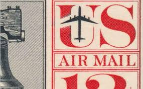 |
| HipStamp | C63 15 cents Statue of Liberty Stamp used VF | United States, Air Mail Stamp / HipStamp | 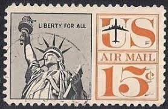 |
| eBay | U.S. Used Stamp Scott #C63 15c Air Mail, Superb Jumbo. Red Cross Cancel. A Gem! | eBay | 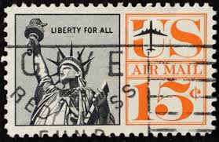 |
| eBay | 1959(?) Liberty for All Block of 4 U.S. Air Mail 15c Stamp. (No. 5) Scott's #C58 | eBay | 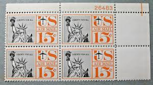 |
| HipStamp | USA t 15c Air Mail Liberty for all / 1289 | United States, General Issue Stamp / HipStamp | 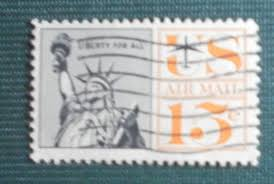 |
| eBay | Flags, National Emblems US 15 Cent Denomination Postage Stamps for sale | eBay | 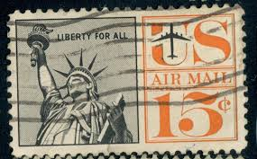 |
| HipStamp | USA 1961 Scott C63 used - 15c, Statue of Liberty | United States, Air Mail Stamp / HipStamp | 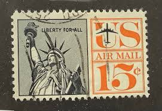 |
| By the people, For the people" The first is a United States airmail stamp (Scott) featuring a portrait of President Abraham Lincoln. The next is a vintage 15-cent US Air Mail postage | 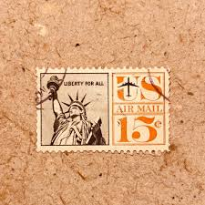 | |
| eBay | US STAMPS, Old Liberty 3 Cent Purple, 11 Cent Red And 15 Cent Airmail. | eBay | 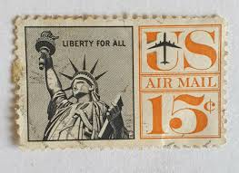 |
| BidCurios | USA - Used stamp - Airmail - Statue of Liberty - (B-002/K)x - BidCurios | 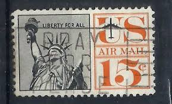 |
| eBay | C63, MNH 15¢ Diagonal Misperfed Error Block of 4 Airmail Stamps * Stuart Katz | eBay | 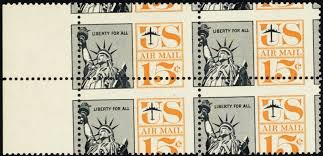 |
| eBay | US USA Sc# C58 MNH FVF PLATE# BLOCK Statue of Liberty Torch Jet Plane | eBay | |
| Alamy | Air mail america hi-res stock photography and images - Alamy |  |
| eBay | C58, 15¢ STATUE OF LIBERTY AIRMAIL, LOT OF 100 Plate Number blocks of 4, VF | eBay | |
| eBay | STAMP US SCOTT C63 "Statue of Liberty" 15 CENT MNH 1961 PLATE BLOCK OF 4 #26878 | eBay | |
| iStock | Us Air Mail Stock Photo - Download Image Now - 1960, Postage Stamp, Air Mail - iStock | |
| eBay | 1961 U.S AIRMAIL CLASSIC 15c LIBERTY REDRAWN Plt # Blk of 4 Sc#C63 M/NH/OG | eBay | |
| well-being-therapy.com | Custom Return Address Stamp Statue Of Liberty Return Address Labels | Zazzle Return Address Stamp Personalized | |
| eBay | US Plate Blocks Stamp Scott# C58 Statue of Liberty 1959 (Durland) MNH L316 | eBay | |
| iStock | United States Used Postage Stamp Showing The Statue Of Liberty Stock Photo - Download Image Now - iStock | |
| eBay | 1959 15c Statue of Liberty, Air Mail, Black & Orange Scott C58 Mint F/VF NH | eBay | |
| Naval Cover Museum | MISSISSINEWA T-AO 144 - NavalCoverMuseum |